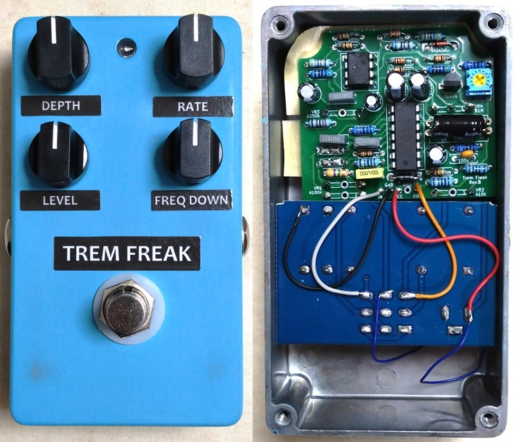

Trem Freak
2025年10月20日 カテゴリー：自作エフェクター（アナログ）

以前製作したTremolecを簡略化し、高音域側の音量が揺れるようにしたトレモロエフェクターです。
【回路図】
音量調節素子
電圧により音量やゲインを変化させる方法としては、JFET（→ ひよこのページ トレモロ）、CA3080等のOTA（→ CA3080 Tremolo effect）、フォトカプラ（→ Tonepad Tremulus Lune）があります。 アナログフォトカプラはほぼ純粋な抵抗として扱えるので最も使いやすいです。 手に入りやすいのはLCR0203で、こちらのページで特性が測定されており参考になります。 LTspiceのシミュレーションでは、こちらのデータを使用させていただきました。 抵抗値が高いところは少しの電流変化で大きく抵抗値が変わってしまい安定した動作が望めないので、数kΩ程度までが実用範囲と考えました。
フィルタ回路
最初はパラメトリックイコライザやグラフィックイコライザの回路を用いたピーキングタイプのフィルタを検討しました。しかし、妥当なゲインやQ値となるシミュレーション結果は得られませんでした。そこで採用したのがローパスフィルタとハイパスフィルタをかけた音をミックスする回路です。 ハイシェルフタイプのイコライザのような動作で、周波数のコントロールが容易です。ノブを時計回りで周波数を上げる動作にしたかったのですが、Cカーブの2連ポットは入手しづらいため、Aカーブで逆の動作としました。最も低いカットオフ周波数は70Hzで、ほぼ全周波数帯にかかるため通常のトレモロに近くなります。
LFO（Low Frequency Oscillator）
フェイザーでよく見かける、三角波に近い形のLFOです。後段では、2.5Vを中心として非対称な増幅を行っています。 中心より下側では、フォトカプラのLEDの順電圧に近づくため振幅を少なくします。中心より上側では、電流をより流したいので振幅を大きくします。 トリマーは、揺れの中心（2.5V）でフラットな特性となるようにフォトカプラの個体差に合わせて調整するためのものです。 オペアンプは低消費電力のものが適しており、低価格なLM358を使用しました（TL072はグラウンド側がクリップする可能性があるため不適）。
【基板】
ポットは左右間隔30mm、上下間隔23mmで配置してあります。
トリマー調整
DEPTH 0%、RATE 50%、FREQ DOWN 50%とし、揺れが起こらないようにします。この状態で、音色にほぼ変化がないフラットな特性となるように調整します。厳密でなくても問題ありません。